Chapter 6 ch 4: Data Visualization with Pandas
6.1 4.1.1 Plot Methods
plot()method
Works on the pandas DataFrame and Series objects
Pass plot the kind argument:
- ‘line’ : line plot (default)
- ‘bar’ : vertical bar plot
- ‘barh’ : horizontal bar plot
- ‘hist’ : histogram
- ‘box’ : boxplot
- ‘kde’ : Kernel Density Estimation plot
- ‘density’ : same as ‘kde’
- ‘area’ : area plot
- ‘pie’ : pie plot
- ‘scatter’ : scatter plot
- ‘hexbin’ : hexbin plot
import pandas as pd
import numpy as np
import matplotlib.pyplot as plt
import sklearn
from mpl_toolkits.mplot3d import Axes3D
from sklearn import datasets
from sklearn.decomposition import PCA
iris = datasets.load_iris()Obtain data
url = "https://archive.ics.uci.edu/ml/machine-learning-databases/iris/iris.data"
names = ['sepal_length', 'sepal_width', 'petal_length', 'petal_width', 'species']
iris = pd.read_csv(url, names=names)Histogram
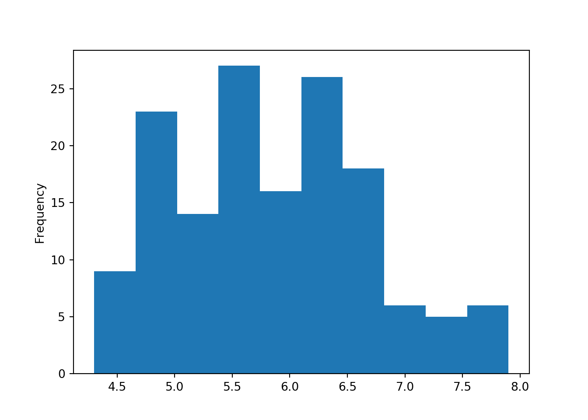
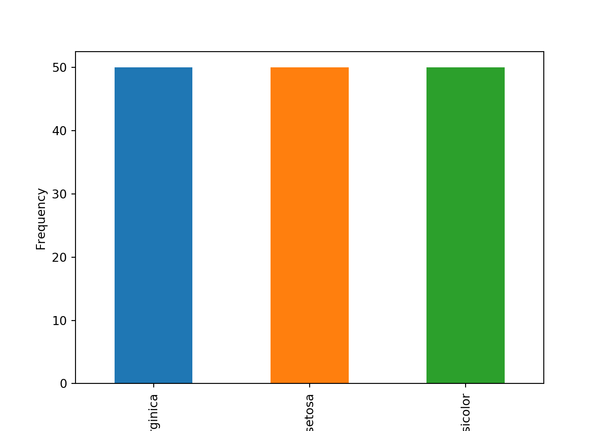
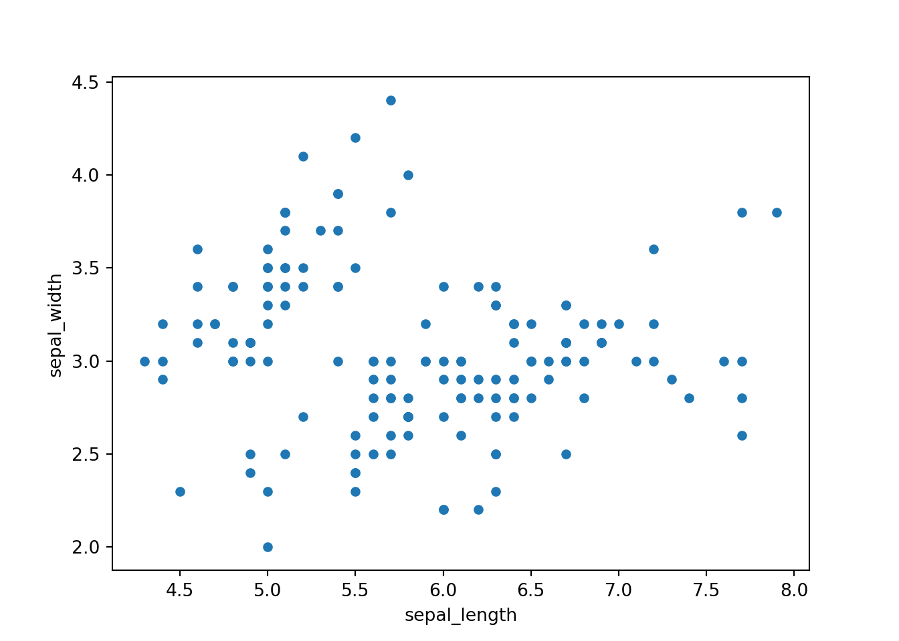
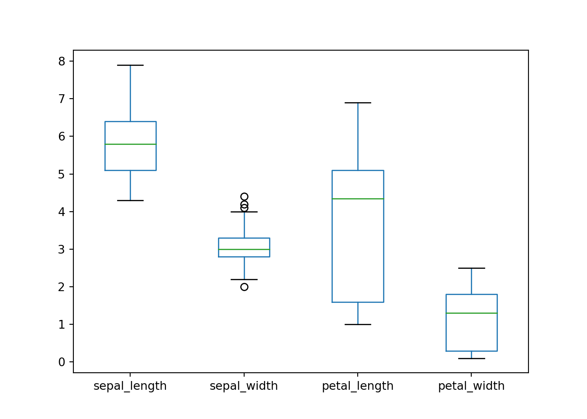
6.2 4.2 Data Visualization with Seaborn
import seaborn as sns
import matplotlib.pyplot as plt
plt.clf()
sns.distplot(iris['sepal_length'])
plt.show()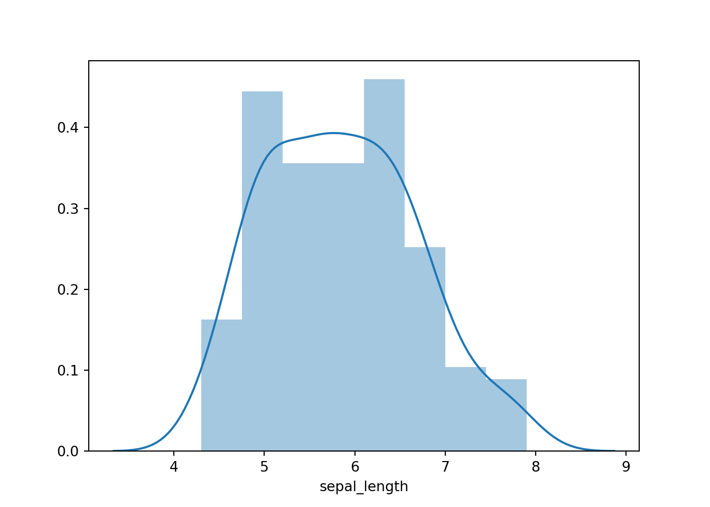
Bar plot:No need to pretabulate the data:
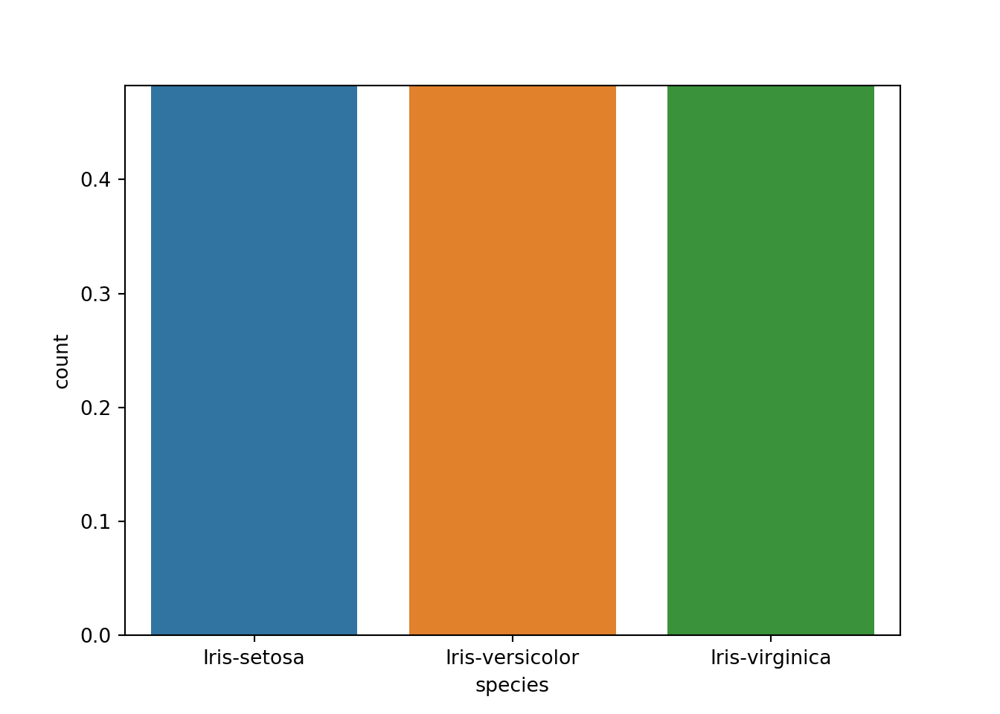
Box plots:
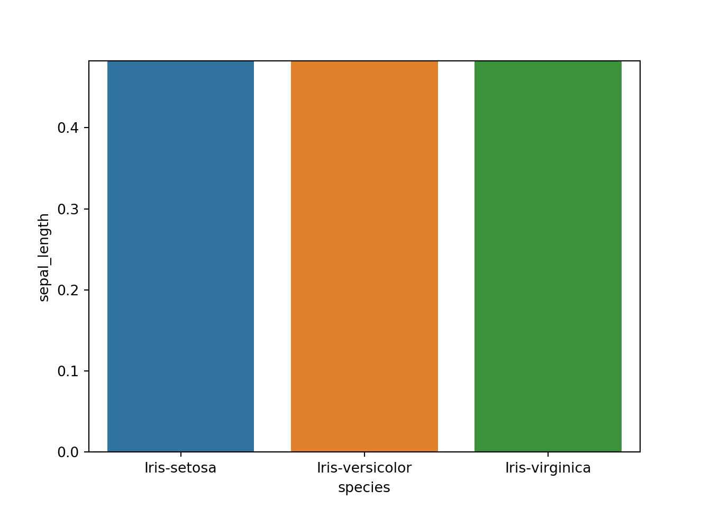
regplot:

No regression line:
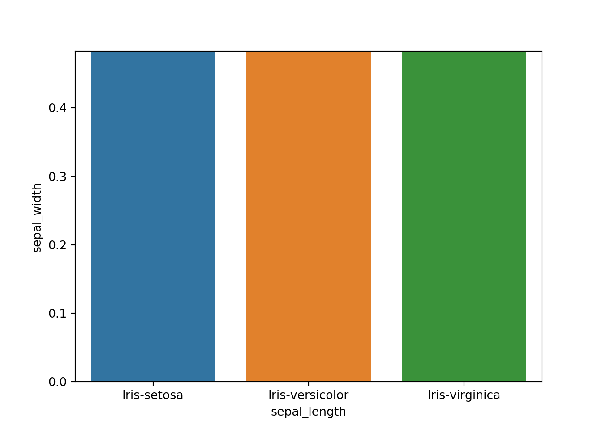
Specify row and col arguments
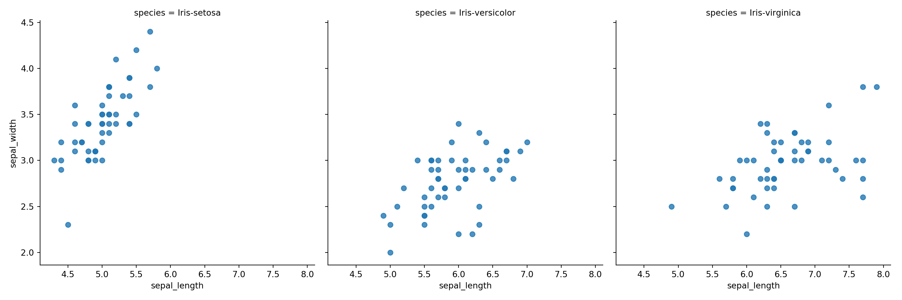
Create a facet grid object and then map the plot into that.
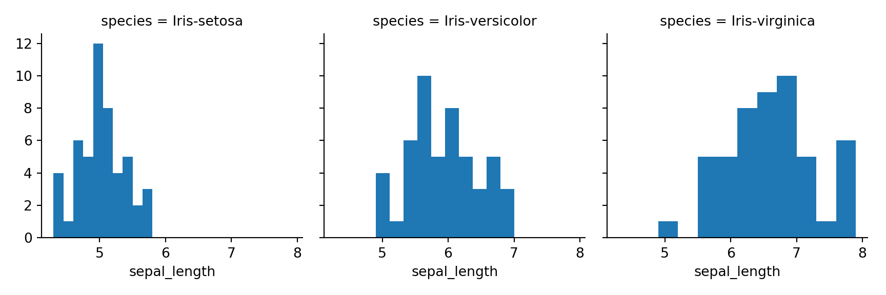
g
6.3 4.3 Data Visualization with Matplotlib
Histogram
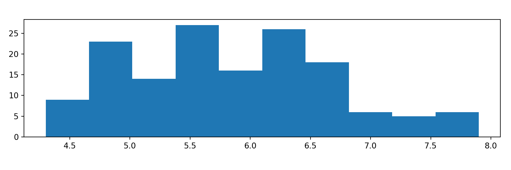
Scatter plot
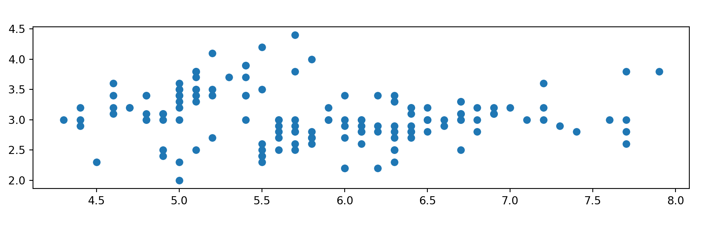
fig, ax = plt.subplots()
ax.scatter(iris['sepal_length'], iris['sepal_width'])
ax.set_title('Sepal Length')
ax.set_xlabel('Sepal Length')
ax.set_ylabel('Sepal Width')
plt.show()fig, ax = plt.subplots()
ax.scatter(iris['sepal_length'], iris['sepal_width'])
ax.set_title('Sepal Length')
ax.set_xlabel('Sepal Length')
ax.set_ylabel('Sepal Width')
plt.xticks(rotation=45) # rotate the x-axis ticks
plt.show()The figure` fig`` is an entire image, but an Axes,ax`, is an individual plot in it, i.e. sub plots.
we can call scatter() on the ax object.
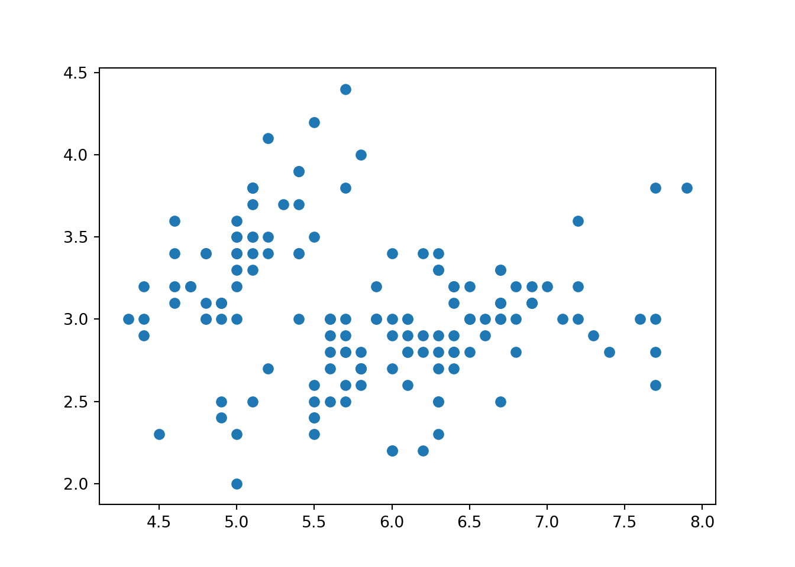
Here we create two axes:
fig, (ax1, ax2) = plt.subplots(1, 2)
ax1.scatter(iris['sepal_length'], iris['sepal_width'])
ax2.hist(iris['sepal_length'])
plt.show()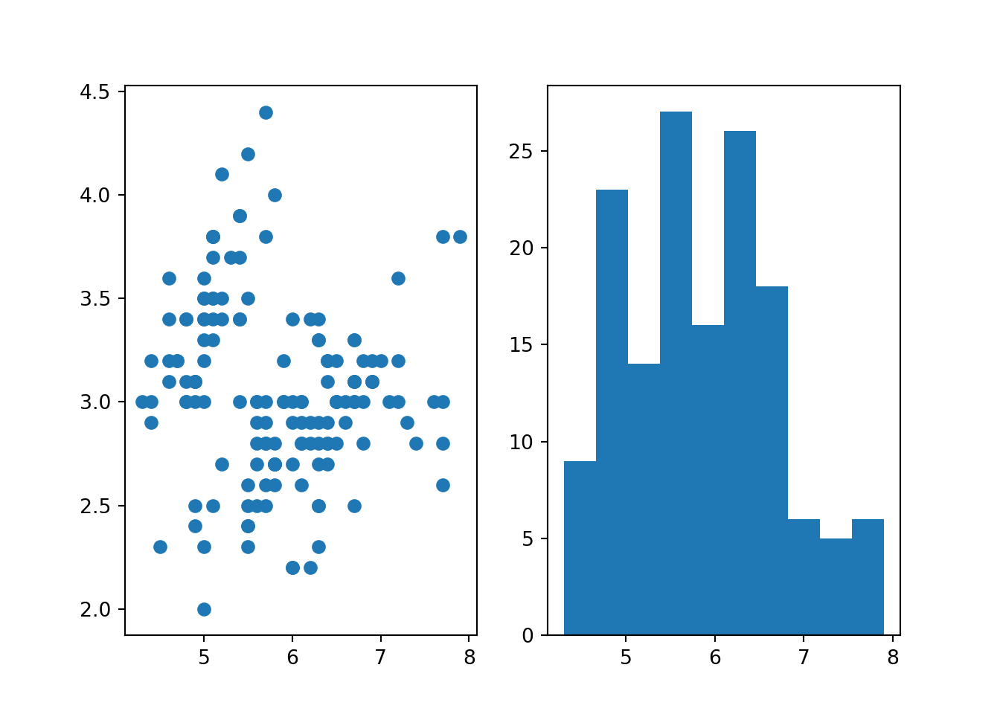
You can mix functions form different plots: ax = ax
import seaborn as sns
fig, ax = plt.subplots()
sns.regplot(x='sepal_length', y='sepal_width',
data=iris, fit_reg=False, ax=ax)
plt.show()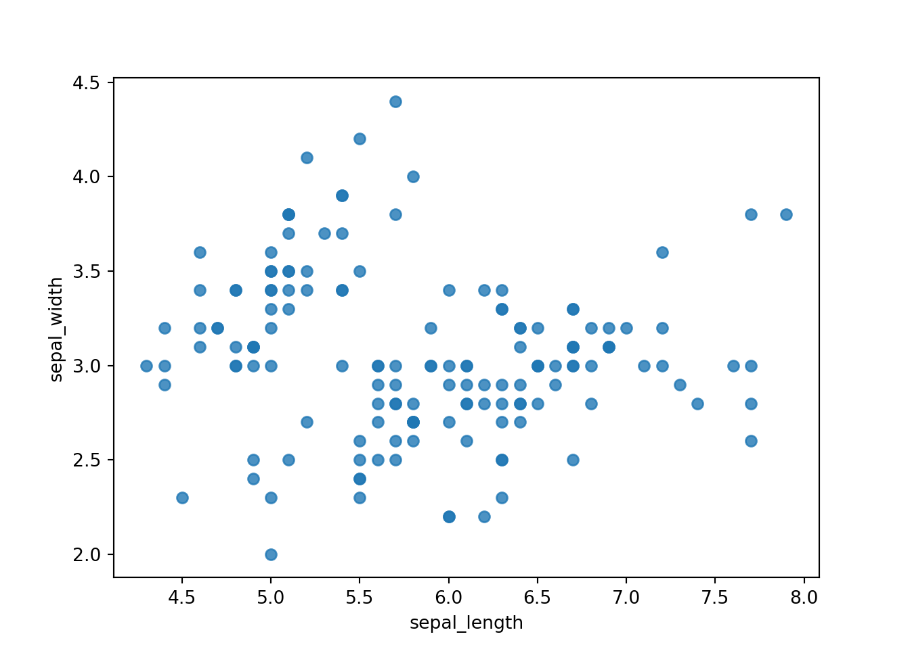
Prevent plots from overlapping by clearing the figure with plt.clf().
6.4 Libraries
6.4.1 Numpy
Adds Python support for large, multi-dimensional arrays and matrices, along with a large library of high-level mathematical functions to operate on these arrays.
6.4.2 SciPy
A collection of mathematical algorithms and convenience functions built on the Numpy extension of Python. It adds significant power to the interactive Python session by providing the user with high-level commands and classes for manipulating and visualizing data.
6.4.3 Pandas
Software library written for data manipulation and analysis in Python. Offers data structures and operations for manipulating numerical tables and time series.
6.4.4 Scikit-learn
A Python module for machine learning built on top of SciPy and distributed under the 3-Clause BSD license.